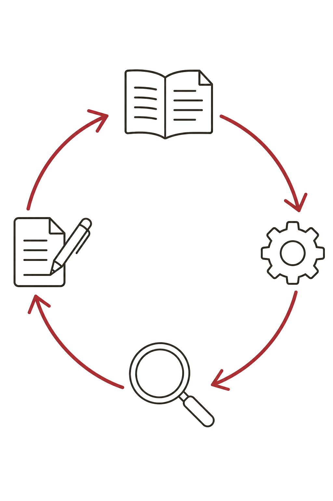
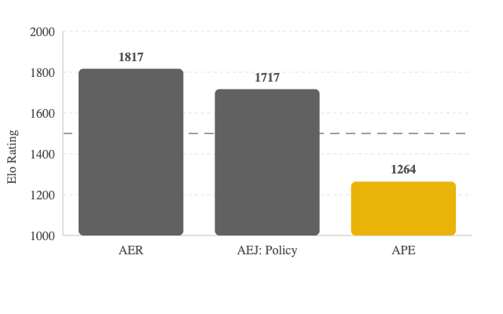
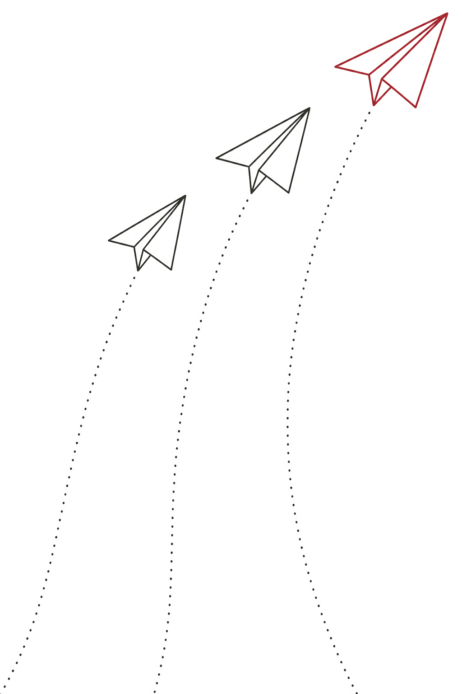

References
Birkbeck Business School · Research seminar
AI for research so far
+42% submissions to Organization Science after ChatGPT
Heavily-AI papers: 3.2% reach revise-&-resubmit vs 11.9% for minimal-AI ones.
AI use correlates with worse readability, more jargon.
Driven by incentives (publish-or-perish, rankings), not bad faith.
AI for research so far
Hallucinated citations, references to papers that don't exist,
are turning up in peer-reviewed conference papers, and rising fast:
0.28% → 2.59%
of papers carry a fabricated citation in a single year (ACL venues, 2024→2025).
154 papers
at EMNLP 2025 (3.7%) cited work that isn't real, 100+ accepted as main papers.
They look plausible and slip past review — and this doesn't count misattribution.

A different bet
Instead of asking AI for an answer, you get it to do the work — against your own files, with every step on show.
HOW AN AGENT WORKS
↻ repeat until the goal is met — the LLM only ever writes text; your machine does the doing.
Tools it can call
The loop, in one task
81% have tried AI chatbots for research, but only 20% use coding agents regularly.
More output early in the pipeline (~75% more working papers), not in journal submissions yet.
Adoption is uneven: economists 39% vs public health 6%; male-named researchers adopt at 2× the rate of female-named.
Researchers are more optimistic about their own productivity than about the field.
Survey of 1,260 quantitative social scientists, self-selected for AI interest. Lyttelton et al. (2026)
The bet
In "centaur" chess, human + machine teams used to beat strong grandmasters
and engines playing on their own.
SO FAR WE ARE OK

In head-to-head tournaments of economics papers, AI-generated papers (APE) score well below journal-level work — a 450–550 Elo gap behind AER and AEJ: Policy.
Project APE — Autonomous Policy Evaluation (non-peer-reviewed automated benchmark),
Social Catalyst Lab, Univ. of Zurich. ape.socialcatalystlab.org
(Jun 2026).
Tell it what you actually want: the goal, the constraints, the audience.
Point it at your own sources, not its memory.
Ask for the plan, or its questions, before you ask for the output.
Check what it hands back - ideally both manually and automatically.
These apply to any agent you use: Codex (OpenAI) and Claude Code (Anthropic) are in the lead.

Let's GET THIS StARTED
Then we talk while they run.
Demo 1 · the prompt
Demo 2 · the prompt
Demo 3 · the prompts
Build the site from these slides and my email course; follow its style guide and match an existing site's structure.
Every claim cites a real, verified source.
Check every claim (file:line) and every DOI; flag invented or stale AI-tool claims, or areas that lack clarity.
Report only, don't fix.
The FOUR habits
Grounding & division of labour
Reads your sources, extracts and narrowly annotates, drafts the analysis code.
Runs the numbers reproducibly: tests and outputs you can inspect and re-run.
Demo 1 quotes its source for every value;
Demo 2's code can be validated by a researcher (or with simulated test data).
Review the outputs
Look at the output, the agents response, and the trace.
Holding on to our own thinking
Published (OA) papers, public datasets: Demos 1 & 3.
Publishable / de-identified data, especially used agentically: ALLBUS in Demo 2.
Identifiable participant data; (others' sensitive unpublished work).
* without a data processing agreement (and ethics approval), e.g. an enterprise contract or an approved secure environment.
Keeping up
Specific claims about these tools go stale fast — the best model this month
isn't the one from three months ago (Sonnet 4.5 → Opus 4.8 → Mythos/Fable …).
The durable thing is the mental model: context, grounding,
plan, verify. Within that, can experiment with pushing the boundaries.
Demo 4 · "peer" review
coarse.ink is an open source review agent. Can use it online, or in your own agent. Long-running background skill (15–25 min/run).
Let's look at the report it produced on a recent preprint of mine.
Earlier reviews caught important issues that we addressed.
Getting started
Claude Code, Codex (ChatGPT), or OpenCode (open models, cheaper & rougher).
A paid plan at ~£20/month gets you started, ChatGPT likely best value.
Boring file management tasks, verifiable analysis code, second-coding, self-review, webpages ...
Decide where you want to learn something and do it your way,
and where you just want to
get things done (deskilling vs. outsourcing).
Lower-stakes starting points
Low stakes, easy to verify ... a good place to build the habits.
Going further
The resource site Demo 3 just built was made from my GenAI email course.
Just about to launch, more thorough than this session (and less focused on agents).
Over to you
Slides made with Claude Code · illustrations generated with gpt‑image‑2, via Claude Code.
References